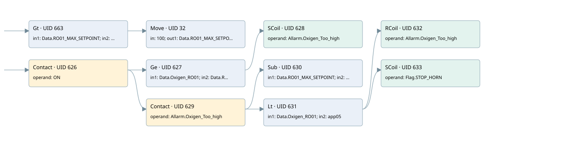

oxigen too high
allarms 3 · 검색 색인 순서 5 · 원본 내부 NID 추정 5
백업 PLF 원본의 3169490 바이트 위치에서 복원한 XML. 검색 문서 1983의 객체 키 16102200756b000000000000와 연결했다. 이름 해석 16/16개. 남은 RefId는 상수 또는 미해석 참조다.
연결 구조 다시 그리기
원본 Part/PCon/Wire를 이용한 연결도다. TIA 화면의 래더 배치 또는 실행 결과를 재현한 그림은 아니다. 핀 연결은 아래 표와 원본 XML을 기준으로 읽는다. 노드 위에 마우스를 두면 피연산자 이름을 볼 수 있다.

접점·코일·블록과 피연산자
| Part UID | Gate | Negated 핀 | 연결 피연산자 |
|---|---|---|---|
| 663 | Gt | in1 = Data.RO01_MAX_SETPOINT; in2 = 100 | |
| 32 | Move | in = 100; out1 = Data.RO01_MAX_SETPOINT | |
| 626 | Contact | operand = ON | |
| 627 | Ge | in1 = Data.Oxigen_RO01; in2 = Data.RO01_MAX_SETPOINT | |
| 628 | SCoil | operand = Allarm.Oxigen_Too_high | |
| 629 | Contact | operand = Allarm.Oxigen_Too_high | |
| 630 | Sub | in1 = Data.RO01_MAX_SETPOINT; in2 = 10; out = app05 | |
| 631 | Lt | in1 = Data.Oxigen_RO01; in2 = app05 | |
| 632 | RCoil | operand = Allarm.Oxigen_Too_high | |
| 633 | SCoil | operand = Flag.STOP_HORN |
접점 경로를 펼친 조건식
Contact·O/A·비교기의 원본 연결을 읽기 쉽게 펼친 보조 해석이다. POWER는 전원 레일 시작을 뜻한다. 호출 블록·에지·타이머의 내부 동작과 다중 쓰기 순서는 이 표로 실행 검증하지 않았다. 미해석 핀과 RefId는 원문 연결표에서 확인한다.
| UID | 동작 | 대상 | 원본 접점 경로 | 내용 |
|---|---|---|---|---|
| 32 | Move | Data.RO01_MAX_SETPOINT | [Data.RO01_MAX_SETPOINT > 100] | Move 입력 100 |
| 628 | SCoil | Allarm.Oxigen_Too_high | (ON AND [Data.Oxigen_RO01 >= Data.RO01_MAX_SETPOINT]) | 조건 성립 시 Set |
| 632 | RCoil | Allarm.Oxigen_Too_high | ((ON AND Allarm.Oxigen_Too_high) AND [Data.Oxigen_RO01 < app05]) | 조건 성립 시 Reset |
| 633 | SCoil | Flag.STOP_HORN | ((ON AND Allarm.Oxigen_Too_high) AND [Data.Oxigen_RO01 < app05]) | 조건 성립 시 Set |
원본 배선 연결
| Wire UID | 동일 Wire 연결 끝점 |
|---|---|
| 588 | Powerrail {} ↔ Part 663.pre ↔ Part 626.in |
| 667 | ORef 664 (Data.RO01_MAX_SETPOINT) ↔ Part 663.in1 |
| 668 | ORef 665 (100) ↔ Part 663.in2 |
| 33 | Part 663.out ↔ Part 32.en |
| 34 | ORef 36 (100) ↔ Part 32.in |
| 35 | Part 32.out1 ↔ ORef 37 (Data.RO01_MAX_SETPOINT) |
| 647 | ORef 634 (ON) ↔ Part 626.operand |
| 648 | Part 626.out ↔ Part 627.pre ↔ Part 629.in |
| 649 | ORef 635 (Data.Oxigen_RO01) ↔ Part 627.in1 |
| 650 | ORef 636 (Data.RO01_MAX_SETPOINT) ↔ Part 627.in2 |
| 651 | Part 627.out ↔ Part 628.in |
| 652 | ORef 637 (Allarm.Oxigen_Too_high) ↔ Part 628.operand |
| 653 | ORef 638 (Allarm.Oxigen_Too_high) ↔ Part 629.operand |
| 654 | Part 629.out ↔ Part 630.en ↔ Part 631.pre |
| 655 | ORef 639 (Data.RO01_MAX_SETPOINT) ↔ Part 630.in1 |
| 656 | ORef 640 (10) ↔ Part 630.in2 |
| 657 | Part 630.out ↔ ORef 641 (app05) |
| 658 | ORef 642 (Data.Oxigen_RO01) ↔ Part 631.in1 |
| 659 | ORef 643 (app05) ↔ Part 631.in2 |
| 660 | Part 631.out ↔ Part 632.in ↔ Part 633.in |
| 661 | ORef 644 (Allarm.Oxigen_Too_high) ↔ Part 632.operand |
| 662 | ORef 645 (Flag.STOP_HORN) ↔ Part 633.operand |
식별자 해석 근거 16개
| ORef UID | RefId | 이름 | IdentXmlPart 파일 | 해석 방법 |
|---|---|---|---|---|
| 664 | 57 | Data.RO01_MAX_SETPOINT | 0684-IdentXmlPart.xml | UID/RID + search-text + NID agreement |
| 665 | 125 | 100 | 0683-IdentXmlPart.xml | literal candidate: UID/RID/NID + nearby named declarations + search-text agreement |
| 36 | 125 | 100 | 0683-IdentXmlPart.xml | literal candidate: UID/RID/NID + nearby named declarations + search-text agreement |
| 37 | 57 | Data.RO01_MAX_SETPOINT | 0684-IdentXmlPart.xml | UID/RID + search-text + NID agreement |
| 634 | 1 | ON | 0686-IdentXmlPart.xml | UID/RID + search-text + NID agreement |
| 635 | 52 | Data.Oxigen_RO01 | 0684-IdentXmlPart.xml | UID/RID + search-text + NID agreement |
| 636 | 57 | Data.RO01_MAX_SETPOINT | 0684-IdentXmlPart.xml | UID/RID + search-text + NID agreement |
| 637 | 58 | Allarm.Oxigen_Too_high | 0684-IdentXmlPart.xml | UID/RID + search-text + NID agreement |
| 638 | 58 | Allarm.Oxigen_Too_high | 0684-IdentXmlPart.xml | UID/RID + search-text + NID agreement |
| 639 | 57 | Data.RO01_MAX_SETPOINT | 0684-IdentXmlPart.xml | UID/RID + search-text + NID agreement |
| 640 | 60 | 10 | 0683-IdentXmlPart.xml | literal candidate: UID/RID/NID + nearby named declarations + search-text agreement |
| 641 | 61 | app05 | 0685-IdentXmlPart.xml | UID/RID + search-text + NID agreement |
| 642 | 52 | Data.Oxigen_RO01 | 0684-IdentXmlPart.xml | UID/RID + search-text + NID agreement |
| 643 | 61 | app05 | 0685-IdentXmlPart.xml | UID/RID + search-text + NID agreement |
| 644 | 58 | Allarm.Oxigen_Too_high | 0684-IdentXmlPart.xml | UID/RID + search-text + NID agreement |
| 645 | 16 | Flag.STOP_HORN | 0684-IdentXmlPart.xml | UID/RID + search-text + NID agreement |
검색 코드 보조 자료
참조 명칭을 찾기 위한 자료이며 실행 순서나 AND/OR 관계는 위 연결표로 확인한다.
"data".ro01_max_setpoint 100 move 100 "on" "data".oxigen_ro01 "data".ro01_max_setpoint "allarm".oxigen_too_high "allarm".oxigen_too_high sub "data".ro01_max_setpoint 10 "data".oxigen_ro01 #app05 "allarm".oxigen_too_high "flag".stop_horn #app05 "data".ro01_max_setpoint